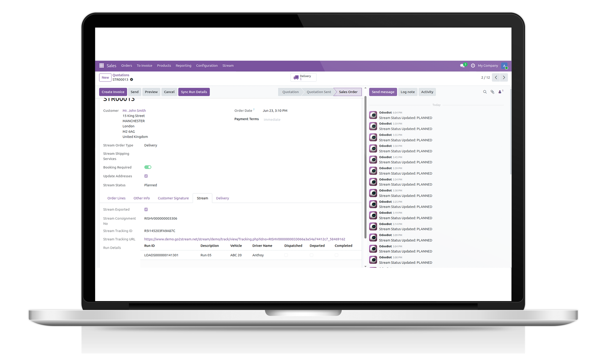

RISHVI LTD
Official Odoo & Linnworks Integration Experts
GitHub Odoo Integration
Seamless integration between Odoo Projects and GitHub repositories
The GitHub Odoo Integration provides a powerful, fully automated integration between your Odoo Project management platform and GitHub. Create repositories, manage branches, and send collaborator invitations directly from Odoo - eliminating context switching, reducing manual steps, and keeping your development and project teams perfectly aligned at all times.
Whether you need to create GitHub repositories from Odoo Projects, create branches from Tasks, invite collaborators, or track repository and branch URLs - this connector handles it all with a single click from within Odoo.
Built for businesses of all sizes running Odoo Community, Enterprise, Odoo.sh, or self-hosted environments, the GitHub Odoo Integration is the most comprehensive Odoo-GitHub integration available on the Odoo Apps Store.

630+
Projects

900+
Clients

12+
Years Industry Expertise

15+
Odoo Engineers

3
Presence Locations

98%
Customer Success Ratio
Odoo Projects & GitHub Repository Integration
The GitHub Odoo Integration provides a structured, reliable approach to manage your GitHub development workflow directly from Odoo - creating repositories, branches, and collaborator access without ever leaving your project management interface.
GitHub Repository Creation from Projects
Create GitHub repositories directly from an Odoo Project with a single click. Set the repository name, visibility (Public or Private), and description from within Odoo - no need to switch to GitHub. The repository URL is stored back on the project automatically.
Branch Creation from Tasks
Create GitHub branches directly from Odoo Tasks. The branch name is auto-generated from the task name and the logged-in user's login, and can be customised before creation. The branch URL is stored on the task for instant access by the developer.
Collaborator Invitations
Send GitHub repository collaborator invitations directly from the Odoo Project. Invitations are sent to all project members whose linked Employee record has a GitHub username configured - with push access granted automatically.
Repository & Branch URL Tracking
Repository URLs are stored on the Odoo Project and branch URLs are stored on each Task - giving project managers and developers instant, clickable access to the correct GitHub resource from within Odoo at all times.
Role-Based GitHub Access Control
Control which Odoo users can perform GitHub operations using a dedicated GitHub Operations Access permission on the User record. Only authorised users can create repositories, branches, or send invitations - keeping your GitHub account secure.
Our Services
The GitHub Odoo Integration is built to eliminate the friction between your Odoo project management and your GitHub development workflow. We deliver a fully managed integration setup, configured to your business requirements - with ongoing support from our experienced Odoo engineering team.
Every feature is designed to save your developers and project managers time while keeping your codebase and project data perfectly aligned across both platforms.

Full-Featured GitHub Integration Capabilities
The GitHub Odoo Integration provides a complete set of project and task-level GitHub management features - covering repositories, branches, collaborators, and access control, with flexible configuration options to match your development workflow.
 Repository Configuration: Set repository name, visibility (Public or Private), and description directly on the Odoo Project form before creating the repository on GitHub with one click
Repository Configuration: Set repository name, visibility (Public or Private), and description directly on the Odoo Project form before creating the repository on GitHub with one click
 Auto Branch Naming: Branch names are automatically generated from the Task name and logged-in user login when a task is created or renamed - following GitHub naming conventions with lowercase and hyphens
Auto Branch Naming: Branch names are automatically generated from the Task name and logged-in user login when a task is created or renamed - following GitHub naming conventions with lowercase and hyphens
 GitHub Username on Employee: Store each team member's GitHub username directly on their Odoo Employee record - used automatically when sending collaborator invitations from a project
GitHub Username on Employee: Store each team member's GitHub username directly on their Odoo Employee record - used automatically when sending collaborator invitations from a project
 GitHub Token Configuration: Configure your GitHub Personal Access Token and owner name centrally in Odoo System Parameters - used securely for all API calls across repository creation, branch creation, and collaborator invitations
GitHub Token Configuration: Configure your GitHub Personal Access Token and owner name centrally in Odoo System Parameters - used securely for all API calls across repository creation, branch creation, and collaborator invitations
 GitHub Operations Access: A dedicated permission flag on the Odoo User record controls who can perform GitHub actions - ensuring only authorised team members can create repositories, branches, or send invitations
GitHub Operations Access: A dedicated permission flag on the Odoo User record controls who can perform GitHub actions - ensuring only authorised team members can create repositories, branches, or send invitations
 Detailed Error Handling: Clear, actionable error messages for every GitHub API failure - covering authentication errors, permission issues, duplicate repository or branch names, and invalid configurations
Detailed Error Handling: Clear, actionable error messages for every GitHub API failure - covering authentication errors, permission issues, duplicate repository or branch names, and invalid configurations
Watch the GitHub Odoo Integration Demo
See the GitHub Odoo Integration in action - from token configuration in System Parameters through to live repository creation, branch management, and collaborator invitations. The demo walks you through the complete workflow including setting up GitHub credentials, creating a repository from an Odoo Project, creating branches from Tasks, and sending collaborator invitations to your development team.
It highlights key features including the GitHub tab on the Project form, the Create Repository and Send Invitation buttons, the GitHub tab on the Task form with auto-generated branch names, the Create Branch button, GitHub username configuration on Employee records, and the GitHub Operations Access permission on User records - giving your team complete control over GitHub from within Odoo.
Advanced GitHub Integration Capabilities
Multi-User Access Control
Control GitHub access per Odoo user with a dedicated GitHub Operations Access flag. Administrators decide which users can create repositories, manage branches, or send invitations - independent of standard Odoo project permissions.
Flexible Repository Visibility
Choose Public or Private visibility for each GitHub repository at the point of creation from within Odoo. Repository settings including name, description, and visibility are all configurable from the Project form before the repository is created.
GitHub REST API
Secure integration using GitHub's REST API with Bearer token authentication. Supports Personal Access Tokens for repository creation, branch management, and collaborator invitations - compatible with Odoo.sh, Enterprise, Community, and self-hosted environments.
GitHub Integration on Odoo Projects & Tasks
The GitHub Odoo Integration adds a dedicated GitHub tab to both the Odoo Project and Task forms - giving your development and project management teams a centralised view of every GitHub resource without leaving Odoo.
Key Highlights:
Ready to Connect Odoo and GitHub Seamlessly?
Stop switching between Odoo and GitHub to manage your development workflow. The GitHub Odoo Integration lets your team create repositories, manage branches, and invite collaborators - all from within Odoo Projects and Tasks.
With GitHub REST API integration, role-based access control, auto-generated branch names, collaborator invitation tracking, and dedicated GitHub tabs on both Projects and Tasks, you get enterprise-grade developer workflow integration at a fraction of the cost of custom development. Our team of Odoo experts handles setup, configuration, and ongoing support so you can focus on building great software.
Get in touch today to arrange a free demo and see how the GitHub Odoo Integration can transform your development project management workflow.
© 2026 Rishvi LTD. Your Partner in Odoo Excellence.